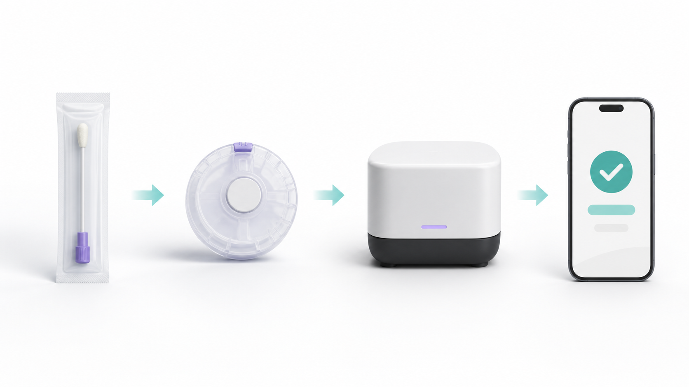

Human oral health
Professional periodontal assessment research.
An exploratory program for adult dental care. Human marker selection, intended use, and clinical evidence remain to be established.
Explore the human program ↗
MicroCD Labs / Flagship in development
CLAIR / Human + veterinary oral health
CLAIR explores saliva testing alongside professional assessment for people and animals. Our clinical question is whether additional evidence can help appropriate assessment, treatment, and follow-up happen sooner.
The human program begins with a periodontal assessment research question. The veterinary program focuses on canine dental triage. Each needs independent validation.
CLAIR is a concept platform in development. Not for sale or clinical use. Performance has not been established.
01 / The clinical question
A useful result must lead to a clinically appropriate next step.
The care pathway connects recognition to professional assessment, treatment when indicated, and ongoing care. We will study clinical benefit, patient or animal welfare, decision-making, and cost alongside test accuracy. Human and veterinary programs require separate evidence.
Explore the CLAIR platform ↗02 / The lab-on-disc approach

Defined collection and sample-validity checks.
Centrifugal microfluidics for controlled sample handling.
Controlled optical readout and structured interpretation.
03 / Two oral-health programs
Human oral health
An exploratory program for adult dental care. Human marker selection, intended use, and clinical evidence remain to be established.
Explore the human program ↗Veterinary oral health
A candidate saliva panel and validity controls, studied alongside the awake oral exam and conversations about further dental assessment.
Explore the veterinary program ↗Both programs are in development and unavailable for clinical use. Evidence, panel composition, and thresholds are specific to each intended use.
04 / Build with MicroCD Labs
Discuss periodontal assessment, human saliva research, and professional workflow.
↗For veterinary teamsDiscuss pilot fit, collection, usability, and the evidence your practice needs.
↗For product teamsMicrofluidics, cartridges, CAD, prototypes, and verification planning.
↗For research partnersKinetic assay analysis, engineering tools, and our development questions.
↗Research foundation
Our kinetic image-analysis preprint explores what changes over time in an assay signal, from region-of-interest tracking to endpoint-versus-rate comparison.
Explore the researchStart a conversation